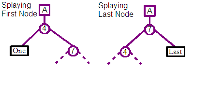
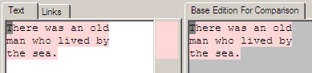

| Contents: | Design and implementation of the Abora Dolphin Demo, including comparisons with Udanax-Gold. |
|---|---|
| Intended audience: | Programmers and general readers interested in what's happening under the covers. |
The Abora Dolphin Demo is an open-source implementation in @link:dolphin_smalltalk@ of a subset of the @link:udanax_gold@ hypermedia server by XOC together with a thick-client UI for MS Windows that explores some of the features of the Xanadu system. The author undertook this application to learn how these systems work, how they might be applied in practice, and to provide something for others to evaluate while the far greater effort of producing production grade versions was undertaken.
The efforts applied on the demo were driven by an appreciation of the design of Udanax-Gold at a shallow level and a glimmer of the possibilities offered by broader xanalogical systems. Investigations into xanalogical systems basically involved working through the writings of @link:ted_nelson@, but the lack of any representative systems left one short of understanding how these features could be used day-to-day and be connected into existing applications and the dominant hypermedia system of the day, the world-wide-web. On the design and implementation side, difficulties were encountered while trying to work with the released Udanax-Gold source code. The size of the released code, the generality of the design, the incompleteness of the release, no running system and lack of documentation placed significant barriers on its considered application. A small degree of relief was found courtesy of a couple of critical papers original written by XOC and recently made available at the @link:sunless_sea@ website. These writings shed enough light on the design to confirm the authors hope for its value, and were instrumental in deciding to press on with the project and create the simple demo implementation.
The process of developing the demo helped the author appreciate some of the core constraints and pressures on the design. A typical course during coding would be start with scrutiny of the reference material, followed by confused head scratching, charging off and coding up something, running into unforeseen complexities or limitations, capped with some new insight on returning to the original reference material. The intention of the demo was not to implement a feature-by-feature clone of Udanax-Gold, but instead to explore the basic features of a xanalogical data server. Repeated iterations of work would reveal earlier misunderstandings, these were often ignored in an attempt to cover as much ground as possible rather than to refactor the code to production grade level.
The source code for the demo and an executable suitable for the Windows OS is available for download from the projects website.
The authors knowledge of the Ent data structure and the basic elements of the Udanax-Gold design derive from two papers written by members of the XOC team, plus repeated travels through the published Udanax-Gold source code.
@link:ted_nelson@ for the Xanadu system, and the @link:xoc@ team for the Udanax-Gold design and implementation.
The author's employer, @link:intware@, for enthusiastically allowing real and wishful holiday allowances to be corralled to enable work on the implementation to be carried out over the course of a couple of months during the summer of 2002.
Many thanks to you all.
David Jones. April 2003. david_jones@night.dircon.co.uk
The core of the demo implementation is a limited version of the Ent data structure which can be found at the heart of Udanax-Gold. The Ent was invented by @link:eric_drexler@ and named after the long remembering walking trees from The Lord of the Rings by J.R.R.Tolkien. The Ent turns out to be a very interesting tree based data structure with some very useful characteristics even though it turns a number of standard computer science assumptions on their head.
The demo only uses a limited version of the ent, reducing the level of generality and most certainly mis-interpreting some of the finer aspects of the Udanax-Gold implementation. Overlaid features that significantly improve the performance for walking root-wards through trees, and reducing space overhead when associating data with nodes shared across versions has been ignored. Even with these limitations in mind, the hope is that others will find the following details useful as an introduction.
The Ent tree, or variations of it, have applicability beyond xanalogical applications. Udanax-Gold builds on the full Ent a very powerful and generic document storage system, but it could be considered in a range of other cases. One example would be for tree based data structures with integrated versioning capabilities; for example XML documents or complicated BOM structures.
There are a number of core features that we want to be supported by a hypermedia system that should be enabled by the low-level data structure responsible for storing the document contents and the links and references between them. Some of the required features of this low level structure that we want to aim for are:
The contents of a document and the structure defining the different versions and links between their content are split into two layers. The Content layer holds chunks of contiguous sequences of document data. These are connected to one or more leafs of a series of binary search trees each defining the contents of a document revision.
The structure of the document revision is built from a binary search tree whose leafs reference the contents of the document. The root of the tree corresponds to a single version of the document, and walking the leafs from left to right will produce the entire document contents. At each interior node a split integer indicates the position of the first element that can be reached by its right branch, and all elements to the left will be before this position. This can be used when trying to find the content element at a specific position in the document.
To see how this works, we will step through a few revisions of a document by adding and removing content to it.
Revision A: We can start with an empty document. This is constructed from just a single root node, with no children. We indicate this root in the diagram above as an empty square on the left hand side. The section on the right hand side indicates that the A revision of the document has no text contents.
We have coloured this revision of the document grey, and labelled it as A. In the forthcoming steps we will assign a new colour and ascending letter for each revision in turn.
Revision B: We will now add some content to the document, in this case the word "One". A new root node is created and is associated with the second revision of the document. A leaf node is created, which represents the "One" string, and the leaf node is then added to the new root as its single child. The document can be considered to have been revised to revision B.
Before continuing, you can see that our diagram still contains the first empty root node. In fact at this point we have two revisions of the same document. The first is empty, the second contains the single "One" word. The contents of each revision is indicated at the top right of the diagram, with one row per revision. The name of each revision and its contents are shown, together with an indication of which revision the elements of that revision were first added to.

Revision C: We will now add a second word to the document, "Two", after "One". A new root node is again created, and a Split node is added as its single child this time. A split node is an internal node and does not directly reference content, instead it has two children nodes; known as its left child and right child. An integer split value is also kept, and it defines the position of the first element referenced by the right child or any of its children. As we see in the diagram above, the round circle indicate a split node, with "One" as its left child, and "Two" as its right child. The split value of the node is shown to be the value 4. This is the position of T character of the right "Two" child. The "O" of "One" has the position 1, as we are using the standard Smalltalk practice of considering the first element of a collection to be at index one.
One of the interesting aspects of the data structure is starting to emerge. The third revision C uses as much of the previous revisions structure as possible, so in this case we see that the "One" of C's "OneTwo" content is actually shared with the previous B revision. The printout of the content for each revision at the top right of the diagram shows that each revision is keeping the same contents, even as further revisions are re-using some of their contents.

Revision D: We will now add a third element to the end of the document, "Three". Again a new root is created, together with a split node as its child. The right child of this split is set to the new "Three" leaf and a split value of 7 is stored. The left child connects into the split node of revision C. Again we are reusing previous revisions data structures. With more complicated revisions there is no limit to the number of levels of structure that you might share with other revisions.

Revision E: We will add a fourth element, "Four", but this time rather than appending to the end of the document, we will instead insert this new element between the "Two" and "Three" content. A new root node and child split node are created. The left node connects into C's split child. The right child connects to a second split which it in turn connects to the "Four" and "Three" leafs. If you trace the leaf nodes from left to right starting from the E root node you will see that the desired document content will be generated. Note that in this case the split node from revision D is not included in this later E revision.

Revision F: In this case we will try to remove one of the existing elements for our next revision, the word "Two". Even though our new revision shouldn't contain "Two", we want the previous revisions to retain their previous content, and so they should still contain a "Two". To implement this we define a new root node and child split node. The split node then connects to "One" on the left and the parent of "Four" and "Three" on the right. Tracing the leafs left to right for F should produce the desired content. The one difference from previous constructions is the +3 associated with the split 4 node that was created. This is used to compensate for the deleted three characters with respect to the positions of elements later in the tree. This will be discussed in detail in a later section of the report.
This concludes our little visual step through the creation of a few revisions of our literary "numbers" document. We have shown multiple revisions of a document being built up, older revisions not being modified while newer revisions reuse as much of their structure as possible. The primitive modification operations of insert and delete have been shown.
An issue that we have only briefly dwelled on is how to use the data structure that we have built up. The single case we have concentrated on is retrieving the entire contents of a specific revision of a document. This is achieved by walking all leafs of a tree starting from the left most one and then iterating one-by-one until the right most one is reached.
Another required operation is to retrieve an element at a specific position in a document, and from that the retrieval of a range elements from one position to another and can be constructed.
Looking back at revision B we can see that retrieving the element at position 1 produces the character "O" (assuming 1-based numbering scheme). This can be found by looking at the single child of the B root, and then just a simple #at: request on the contents of that leaf node.
Retrieving the element at specified position is more interesting for revision C. Assuming we want to retrieve the character at position 5, then we can make use of the split value of the Split child of the C root. This includes a value of 4, which is the position of the first element that could be found by following its right child. So to retrieve the character at position 5, we start at the C root, find its child, see that 5 is greater or equal to the split value of 4. Follow the right branch, and knowing that the first element of the found "Two" content has a global position of 4, then we can easily find the the second character of its content, so "w" is the character at the global position of 5 for revision C.
Moving onto finding the character at the 5th postion of revision D, then we can follow a similar path. Starting at the D root, we can see that 5 is less than the split value of 7 for its child, which will send us down its left branch. At that point 5 >= 4 and so we end up at the "Two" leaf node again, and the letter "w".
The more interesting case is with revision F. Again we are looking for the character at position 5. Starting at the F root, we travel to its single Spit child node, whose split value is 4. As 5 >= 4, we follow the right child, and we this time we make use of a the +3 displacement value that has been associated with the right branch. The displacement value is applied to the position 5 that we had been looking for, so that when we arrive at the end of the right branch we are now looking for the position 8 (5 + 3). As 8 < 11, we take the left most branch and retrieve the last but second character, "o".
The displacement that we applied while navigating leafwards has enabled the F revision to share the 11 split node from the E revision. This split node when defined for the E revision had a global position of 11, as the F revision has deleted the "Two" content before it, that nodes position within the F revision is actually 8, but changing the split value of that node would then break the E revision. We could have duplicated the original split node for this revision, and update the split value with its new value. Instead by associating the displacement value with the new split node added for the F revision, we are able to reuse and so share this node with revision E.
So the neat thing about the displacement idea is that even if we insert and delete elements, later revisions can still share split nodes from earlier revisions, even if the global positions of those nodes now differs across the numerous revisions that share the node.
When walking rootwards, from leaf to root, the inverse of the displacement is applied. This enables you to learn the global position from any element in a leaf node. Those of you on the ball will have realised by now that tracing a path up to a root is actually an involved issue, because each node could have multiple parents, and so a leaf node could have a number of roots. This is not a common problem with tree data structures! We will investigate this issue later.
The Demo implementation stores a separate integer displacement value for both the left and right children of a split node. Whenever you follow either the left or right branch, the displacement is applied to the position that is being found.
The Udanax-Gold Split node implementation has a number of differences from the one described above.
We ended off the above description of walking the nodes of a revision tree leaf-wards, with the issue of instead walking from a leaf to its root. Normally this is a very easy operation in tree data structures, assuming suitable parent references are kept. The complexity in this case is obvious if you look at the "Three" leaf in the final diagram for revision F. The "Three" leaf node actually has two parents, one is the 7 split node associated with revision D, and the other is the 11 split node associated with revisions E and F. Which of the two parents should be followed to find its root?
For the demo each non-leaf node includes a revision number associated with the revision for which it was originally created. Whenever one walks the tree root-wards, a desired revision is also known which can be used to resolve the parent choice. So for example, if we want to learn the global position of the first character of "Three" for revision F, then we want to walk root-ward from its leaf node. There are two immediate parents, the 7 or 11 split nodes. We will take the 11 split node as that node was created with revision E, which is closer to revision F than the D of the 7 split node. At this point we again have two parent choices, and the 4 split node of revision F is obviously the preferred route. At that point its single parent is the revision F root and so we have reached our destination. Applying inverse displacements we can calculate that the T of "Three" is at the global position of 8 for revision F.
The revision number associated with each node is not a simple integer, but a branching number with a format such as "1:4:1". The first revision has a number of "1", the second "2", and so on. If a further revision is derived from the first revision, then that is known as "1:1:1" with the next revision on that branch being "1:1:2".

Reviewing the diagram we can see that revision "2" has three following revisions, "3", "2:1:1" and "2:2:1". A branch is considered the path from the root revision "1" to the specified revision and beyond to all derived revisions. For example "1", "2", "2:1:1", "2:1:2", "2:1:2:1:1" and beyond form a branch.
We discussed earlier in this section navigating root-wards and deciding which one of possibly multiple parents should be followed. Given a desired revision we choose the parent whose created revision is closest to the revision we are interested in. A revision has to be on the same branch as the desired revision to be considered for navigation, and amongst all those that match that criteria the nearest revision before or equal to the desired revision is chosen.
There are significant differences between the demo and Udanax-Gold in this area.
The advantage of a tree as a search data structure is the number of nodes required to be traversed to reach a leaf is the height of the tree which is O(logN), where N is the number of nodes in the tree. This feature only holds if a tree is balanced. For example in the worst case nodes form a chain from the root with children always being to the left. This will form an tree whose height is O(N), or effectively a linked list which is a significant overhead once there are thousands or millions of nodes in the structure.
The Ent appears to use the Splay Tree method to balance itself. This is an amortised balancing technique, and so balances a tree across a number of operations rather than after a single specific operation. This kind of balancing enables the cost of balancing to be spread out over many operations. It can also adapt the structure of the tree to reflect the changing pattern of access to the tree that occurs over time.
The algorithm proceeds by applying a splaying operation on every access to the tree; this includes finds, inserts and deletes of nodes. When accessing a tree, the node that is to be effected is first found, then the splaying operation will pull that node towards the root of the tree by applying a series of rotation operations about the node's parent.

The two basic operations of the algorithm are rotate left and rotate right. Both types of rotations are shown above with before and after states. X marks the node that is to be rotated, and P is its parent about which X is going to be rotated. A, B and C represents sub-trees of any depth that are children of X and Y. The most immediate point of interest is that the X node moves root-wards up the tree.
The algorithm uses sequences of left and right rotations, depending on the path between the focused node and the root of the tree, to pull the focused node to the root of the tree or one of its immediate children. This pattern of rotations tends to bunch up any single chains of nodes producing a 'bushier' tree, and assuming locality of reference should reduce the access cost for succeeding node finds.
Choosing what type of rotation and about whom is defined using the following recipe.
Please investigate the following references for a detailed description of the algorithm, together with analysis of its performance and example implementations.

Before investigating the effects of rotations on displacement values, we will start with a quick walk through the example tree that will be experimented on. The three trees shown above are in fact the same tree, and depict three separate walks from the root; the first finding the element at position 1, the second position 2 and the third position 3. The tree itself contains the string with three characters "XYZ". "X" was originally added at position 9, "Y" at 11 and "Z" at 13. The version of the document that we are now querying is the result of deleting the original elements at positions 1 through 8, 10, 12, and from 14 and upwards, so only leaving these three characters.
Let us follow the centre trace, which shows the process of finding the element at position 2. The Yellow line indicates the path followed by the search, with the grey branches ignored. Starting with the goal to find the element at position 2, we apply the displacement +4, so that we are now looking for the element at 6. The 7 split node indicates we should follow the left child, where we apply a displacement of +3, so that we are now looking for the element at 9. The 9 split node indicates we should follow the right child, where we apply a displacement of +2, so that we are now looking for the element at 11. We finally arrive at the leaf and correctly find the "Y" element. Additionally you can see that our original query for position 2 has been converted through a series of steps to a query for position 11, which is the global position at which "Y" would have been originally added to in its creating revision.
Thinking back to the Demo implementation of Split nodes, and you will remember that displacements are associated with the left and right children of those nodes. This feature is not part of the standard binary search tree and so we will have to resolve the impact of that on the splaying algorithm.


The above diagram shows the impact of a rotation towards the right, and below that a rotation towards the left. The second example is actually a continuation of the result from the first, and so after a rotate right, followed by a rotate left, we end up with the original tree again.
If you take a closer look at the top pair of trees, the left hand tree is the before, and the right hand tree is the result of rotating the 9 split node towards the right. You can see in the result that the 9 split node is now the parent and the previous 7 parent is now the child of the 9 node. The three nodes X, Y and Z are still in the same left to right order, but we see that the Y leaf is now the child of the 7 split rather than the 9 split where it started.
The original tree includes a displacement for each arc, and these are labelled starting at A for the +4 at the top of the tree. The author calculated a simple set of transformations for each of the branches of the tree to ensure that requests will produce the same answers for the tree produced by the rotation. The intention is that the rotations should preserve the semantics of the tree, and simply improve the cost of navigation. Reviewing the resulting tree, we can see that the positions 1, 2 and 3 still lead to the characters "X", "Y" and "Z" respectively. The calculations are shown using the labelled displacements from the first. For example the displacement at the top of the tree is now +7 which is the result of adding the A and B labelled displacements from the original tree.
A second complexity enjoyed by the demo implementation that is beyond the trees discussed in the splaying paper, is that a node in an ent trees may have more than one parent. This is a very significant difference from standard binary search trees!
We are again going to show a rotate right operation, but this time the 9 split node has two parents. One is the root node for its revision D. The other parent is the 7 split node of a later version.
Looking closely at the before tree you can see that from the D revision root node, position 1 finds "X" and position 2 finds "Y". Starting above the 7 split node, which is from a later revision, we can see that position 3 finds "X", position 4 finds "Y" and position 5 finds "Z". Notice that X has a different position in the two different revisions.
If we look at the result of rotating right about 9 split node you will see something interesting. From the start we can see that the 9 split node from the D revision is now the parent of the 7 split node which is actually associated with a later revision than itself and so would not be possible to construct using the normal processes. This breaks one of our assumptions that nodes created by later revisions may reference nodes from older revisions, but nodes created by older revisions may not reference nodes from later revisions.
Tracing down from the D revision root node we still find that position 1 finds "X" and position 2 finds "Y". But now we find that position 3 would find "Z". We have broken the integrity of revision D as it now includes Z in its content, which it didn't before the operation.

The solution the Demo uses for both of these issues would ben in this case to duplicate the 9 split node before the rotation. This is indicated in the diagram above, and you can see that the result preserves the integrity of both revisions. Note that the D revision nodes are now completely untouched by the operation.
The general algorithm that is used is to duplicate a node if it and another node involved in a rotation were created by different revisions.
The obvious downside of this tactic is the cost of duplicating a node. This turns us away from one of the goals of the data structure which is to share as much as possible of the structure between revisions. Over time this tactic could end up duplicating a significant proportion of all nodes in the tree until there is effectively a separate tree for each revision. The demo currently ignores this issue as much as possible by just attempting to minimise the number of rotations that occur by only rotating on insert and delete operations rather than finds. This significantly degrades the quality of the Splay tree algorithm for balancing the tree, and wouldn't be acceptable for a non-demo version of the software. The author hasn't analysed the situation enough to be able to suggest an alternative strategy that would reduce or negate the need for node duplication.
Udanax-Gold use of splaying inspired its application in the demo.
A closer analysis of the Gold implementation in action is going to be critical in deciding whether splaying has any value in the long term as the tree balancing algorithm for future Abora implementations.
The earlier discussions over the use of the tree data structure for sharing content between revisions glossed over the mechanisms for deciding what nodes need to be created and to whom they connect when content is added or removed.
The insert and delete algorithms both rely on the splaying operation to pull the nearest node root-wards to one of a small number of known states that can he handled. At that point a predefined set of mutations can be applied to achieve the insert or delete.
First the existing leaf node that the new content is going to be inserted before or in the middle of is found, and its parent is splayed towards the top of the tree.
The parent node will only become the child of the trees root if the leaf is the first or last element in the entire tree. Otherwise the parent will be the grand-child of the root, with the leaf being the centre facing child. These cases are indicated in the diagrams above, where the leaf node with a black box is the focus of the splaying operation.
If the existing leaf node happens to be the first leaf node in the tree and the new content is going to be inserted before it, then a simplified insert operation can be used. This creates a single split node as a child of the revision's new root, the left child of the split is connected to the leaf representing the new content, and the right child to the child of the previous root node.
A similar simplified strategy can also be used if the new content is going to be appended to the end of the tree. A single split node is created as a child of the revision's new root, the left child of the split is connected to child of the previous root node, and the right child is connected to the leaf representing the new content.
In the case of the CollectionLeaf, which is an optimisation for representing an array of primitive values with a single leaf node, if the insert operation is found to apply to a position within its content, then the leaf will have to be split into two new leafs, with the start of the second leaf matching the position at which the new content will be inserted. A new split node will take the place of the existing collection loaf node, and connects to the two new leaf nodes. This operation will modify the nodes used in existing revisions, but it preserves their current semantics. Once this split is completed, the insert operation continues against the new right hand leaf node.
The general case is the insert immediately before an existing leaf, and that leaf is neither the first nor last in the entire tree for that revision. There may be two patterns of node structure at this point as a result of splaying its parent root-wards. The node which we will insert before is either the left child of the parent or the right. For code simplicity we re-splay in the case of this being the right child, to translate it into being the left child. The end result is that we can be confident of the pattern of nodes which we are going to be inserting into.
In this case you can see from the diagram above that two new split nodes are created to allow the insert of the new leaf, and a tie in with existing nodes. The first split node is the child of the root, and its left child connects to the left child of the previous root node. The right child connects to the second new split node, whose left child is the leaf representing the new content, and its right child connects to the right child of the previous right node.
First the parent of the leaf node that is to be deleted is splayed towards the top of the tree, so that we reach one of the states shown at the start of this section.
Similar to the insert operation, for simplicity the standard delete operation has only been implemented for one orientation of the leaf node. If the node to be deleted is a right child of its parent, then a second splaying occurs to force the child to be a left child.

The parent node and all nodes to the root are then duplicated, before updating the connections to remove the desired leaf node. For example in the diagram, the parent 7 split of the Two leaf to be deleted, would be duplicated together with its parent the 4 split node. These node would still reference the same leaf nodes, and so would effectively produce a parallel parent chain from the Two leaf to the new revisions root.
Again optimisations may be made for deleting the first and last nodes in the tree.
The standard case at this point would just involve replacing the duplicated split node with the sibling of the deleted node, and then updating the split information to take into account the deleted content. Back to the diagram we see that the duplicated 7 split node is removed, and replaced by a reference to the original Three leaf, which is the sibling of the deleted Two leaf. Finally the displacement values for the duplicated 4 split node is updated to take into account the missing content from the new revision.
Currently the author does not know how Udanax-Gold solves this problem.
Transclusions enables the sharing of content by quoting directly from the original source. Transclusion is a primitive function of the implementation, which even hyperlinks are manufactured from.
Transclusions are implemented under the covers by making use of a layer of indirection between the leafs of an Ent tree and its actual content. A content element holds a collection of parent leaf nodes belonging to possibly different document trees that it is a member of. This allows the same content to belong to multiple documents, revisions, and be quoted more than once within the same document.
Reviewing the transclusion summary from the first paragraph of this section, we see "...by quoting directly from the original source". In fact in the current implementation there is no distinction between the document that originally contained a reference to the content and subsequent documents that reference it. A missing feature from Udanax-Gold would be storing the owner of the content, which would either by the author or the owner/publisher.
The UI for the Demo allows a transclusion operation to be defined by altering the behaviour of the copy-and-paste action. When pasting, rather than just inserting a copy of the text that was initially copied, instead the original text is quoted. This assumes the text was copied from the demo, in the case of the text being copied from another application then the paste is simply a normal paste and new content will be created in the tree. This highlights the difference of transcluding a word and retyping it into the system afresh.
Let us first consider the simple case. A document revision holding a single character "X".

The conceptual view depicts the tree and single leaf with the X content as we have done on numerous occasions before in this document.
The second section of this diagram peels back the conceptual skin of the X leaf node from the first view, to reveal that the leaf node doesn't actually hold the "X" character, but just references a BeDataHolder object holding the "X" character. The benefit of this indirection is that the same "X" character can be included (transcluded) other times in the same document revision, other revisions or even other documents. In all cases the leaf node representing "X" will reference the same BeDataHolder.
BeDataHolders hold a collection of parents, which are all the leaf nodes that reference it and so represent its contents. This enables you to find all revisions and documents that transclude this content. This information is used in the back-follow operation of Udanax-Gold, and enables useful front-end features such as finding all the other documents that quote from yours.
The example has so far considered simple content such as a character, but later on we will find that the content leaf can reference other types of content elements, such as BeEdition or BeWorks which in turn could represent significant quantities of content.
The CollectionLeaf is an optimisation for the ContentLeaf. Imagine the user adds the phrase "Aaron A Aardvark" in one operation. Creating 17 leaf nodes and 17 BeDataHolders each holding just a single character of the phrase would be a performance disaster. CollectionLeaf and its paired BeCollectionHolder content element is an attempt to reduce this overhead. In the "Aaron A Aardvark" case a single CollectionLeaf leaf node would be created, that would reference a single BeCollectionHolder that would holder the 17 characters within a single String object.
If the same contents was transcluded to a different document, a new CollectionLeaf would be created that would be added to its ent tree, but it would reference the same BeCollectionHolder instance and so have access to the 17 characters.

What if another document simply wanted to transclude the "Aardvark" section of the phrase? In that case again a new CollectionLeaf would be created that would be added to its ent tree, and it would reference the same BeCollectionHolder. The collection leaf though would record that is was only interested in a region of the entire contents of the holder, positions 9 to 16 inclusively.
The Udanax-Gold equivalents for the ContentLeaf and CollectionLeaf classes and the content element classes that they reference are somewhat of a mystery to the author at the moment. These leaf classes seem to go by the name Loafs and there are a number of subclasses.
The class hierarchy for the tree nodes is strongly inspired by the Udanax-Gold implementation but includes some simplifications, especially for the Leaf classes as a result of a lack of knowledge on my part for how this group of classes relates to the content classes.

Content elements are the individual items making up the content held by an edition. We have covered the holders of primitive data and collections in the discussion of what ent leafs represent. There are a number of other more interesting examples of these elements, including the edition content element which enables composite contents to be built up.
These classes are known as Rnge Elements in Udanax-Gold.
Works define the identity for a document, and its associated current edition provides its contents.
A work holds a single edition which is considered the current content for that revision of the work. As editions are read-only, any attempt to modify the contents of the edition results in a new edition that incorporates the existing content plus the desired change. A work must then be revised to reference the updated edition if the new content is going to be considered its current content.
Revising a work to a new edition requires one to have previously gained a lock on the work. This gives one the exclusive rights to revise the work as many times as one likes whilst the lock is still held. The unlock operation gives up the revise right, and enables others to take it instead. An unlock automatically occurs when either the front-ends reference to the work is lost, or the connection from the front-end to the server on which the work is stored is closed.
The limitation of allowing only a single reviser of a work at any one time on the face of it seems to be a overly restrictive. For example a user could lock a Work for the majority of the day, restricting any other user of the system from modifying it during that time. This problem is side stepped in a very interesting way. A work is simply the identity for a document, with its content held by its associated edition. Any number of works may reference the same edition, so this allows a second concurrent reviser to create a new temporary work on the original edition of the first work which they can then edit freely. Once the lock on the original work is released, they can then gain the lock and merge in any changes from their edition as need be. Or they may even continue to use the new work if that branch is ok.
A work can be set as frozen which toggles it into a permanent read-only state. Once frozen it will not allow itself to be revised to hold a different edition as its contents. As editions are effectively immutable, that safeguards the works content from ever changing. Even in a frozen state, the works list of endorsement can still be altered.
A work can record its history of revisions as a list of previous revisions of itself. These are frozen works so their content can not be changed. The history is extended each time the work is revised. The time a work was revised is associated with the frozen work.
The work holds an ID object which uniquely identifies the work on the current server machine.
beFrozen and
isFrozen messages are supported. Freezing appears
to be a one way operation, with no corresponding thaw operation
present.Clubs enable the classification of users and agents for authorisation purposes.
Clubs are implemented as subclasses of Works. The demo makes no use of clubs other than in association with endorsements, and then only as an object with a well known identity.
The author has only a shallow appreciation of the club system at the moment.
An edition holds the content for documents. It forms effectively an immutable object, and modifications to its contents will result in a new edition being returned that includes the original contents with the applied change.
The contents that an edition holds can be both collections of simple data elements such as characters, or it can form a composite structure holding further editions and works.
The edition holds a revision number for itself, and is able to respond with the next valid revision number after itself. It records the highest revision number it has given out so that it can properly generate subsequent revision numbers. This enables a tree of further revisions based on the current edition to be generated.
An edition holds an exclusive reference to the root node of the ent tree that forms the connection to the content elements that the edition represents.
The BeContentElement class hierarchy of the demo is a subset of the content classes supported by Udanax-Gold. An instances of this class specify the content of documents.
The demo implementation is closely modelled after that of Udanax-Gold.
Given two documents, what are the similarities or the differences between them? This is a feature supported by word processors, text editors and custom differencing tools such as the Unix diff tool. Most of these implementations start with two arbitrary text files and they can then calculate a set of differences between them. The quality of the results varies tremendously based on the input texts; uniqueness of terms used, quantity of repetition, and the number of differences. Results may be at the granularity of individual lines or even down to words or characters within a line. The resulting differences are usually broken down into primitive insert, delete and modification differences. So if a block of text is moved from the start of a document to the end, this will be recorded as a delete from the first document, and an insert in the second. This simplification unfortunately separates the results from the user level actions that originated these changes, and this separation between action and resulting differences is a complication for a user to understand what has actually been done to a file to make its contents different.
Differencing tools can often support an extended form of finding the differences between a pair of files, by comparing three files, with one considered the elder version of both the second and third files. This helps in the case of version branches when two competing versions are made form the same starting document.
The implementation of the demo is radically different from the standard techniques used. The high level spin on this is that the demo finds the similarities between two documents, rather than the differences. The demo can accurately indicate moved and copied blocks of text in addition to the simple insert, delete and modification differences one usually is informed of. It also wont get confused by some of the issues that degrade the quality of results obtained from classic differencing tools.
The downside of the demo implementation is from its inherent implementation. It works by finding what content is shared by the two documents that are being compared. So given a simple text edition, if that content is transcluded by another edition, then those editions will be seen as being the same - because they actually reference the same content elements under the covers. But if one was to retype in the contents of the first edition in a new edition, so it appears to be exactly the same to the user, then those two editions would be seen as completely different. Even though each element of the two has the same character value, they aren't referencing the same character element, so they are considered different. So even though the tool can provide superior results to the standard differencing techniques, it requires a commitment to the system, and it is useless for texts entered without reference to each other.
To help with the problem of parallel entered texts, it would be possible to have a second phase that passes differences through a standard differencing tool, though this it may lead to even more confusion.
As mentioned the implementation works by walking through two editions and building a map between each of the content elements that they share. It can handle content elements being included in a different location between the two, or an element being included more than once.
The user level API for an edition is the
BeEdition>>sharedWith: anotherEdition message which
returns an ordered collection of mappings. A mapping is simply an
association from a range of element positions in the first edition
to another range of element positions in the second. There could
be multiple mappings for the same position if the same content
occurs more than once.
Once returned to the UI, the steps required to show this mapiing to the user by painting are relatively simple.
As indicated in the screen shot above, contiguous sections of shared content are given the same background colour. A series of alternating colours is used to differentiate the sections.
The thin vertical mapping window in the middle that draws a connections between the individual characters of the two editions has an interesting issue in that the connections do overlap, so it's not possible to ensure that useful connections are not obscured. The simple strategy the author took was to paint the largest mappings first, and then overlay the smaller mappings on top of them.
Each of the leafs of the source edition are walked one by one. For each leaf, the content element that they represent is fetched, and in turn all of the leafs which represent it. These other leafs are then walked, and any which aren't members of anotherEditon are rejected. Of the remaining leafs, their global positions are calculated and a mapping between the global position of the source leaf to the global position of the each of these leafs is collected.
In the case of CollectionLeafs there is also an additional test to make sure that there are some elements of the content element shared between the subsets of that content held between the two leafs. If there is a match, then the range of common elements between the two is calculated and a suitable mapping created.
Once all the mappings have been collected for the leafs of the edition tree, then a further processing step is employed to convert the raw mappings into a more coherent and convenient set for use by clients. Mappings are sorted by their global positions, and contiguous mappings are combined together to form a single mapping. The actual algorithm used is potentially expensive, and involves repeated passes over the collection of mappings until no improvement in a processing round has been found.
We will step through a simple example to show the differencing in action.
[1, 45) => [1, 45)
We will start with the base text in the edition. This is just the text 'There was an old man who lived by the sea.'
Looking at the visual representation shown by the demo we can see the current text on the left, and the base text that it is being compared against on the right. As both texts are the same edition there are no changes, and this is indicated by the same background colour behind all the characters of both texts. When a background colour is being shown that means those characters represent the same content elements. Note that the grey square over the first character of the text is current character position in the text editor and can be ignored.
Below the image is the actual mapping information that is returned by the server that drives the UI rendering. In this case it is saying that positions 1 through shy of 45 of the new text map to 1 through shy of 45 of the base edition.
[1, 7) => [1, 7)
[14, 51) => [7, 44)
[76, 77) => [44, 45)
At this point a number of modifications are made to the original edition, and that new edition is compared again with the original edition to produce a new rendering of the differences.
In this case 'really', ' and fished all day long' and ' The' were added as three separate insert operations. Looking at the rendering, we can see that the new text has a white background to indicate that this text is not present at all in the base edition. You can also see that the original text now has three different background colours being shown; blue, pink and green. The tactic here is that every contiguous section of text has its own colour, so it is easier to trace back changes between the two editions. Note that the thin vertical strip between the two text editions helps to connect the similarities by drawing filled lines between the two.
Looking at the mapping information below the image we can see the three separate similar content regions that each gain their own colour in the rendering process.
[1, 7) => [1, 7)
[14, 51) => [7, 44)
[76, 77) => [44, 45)
[82, 90) => [14, 22)
The final set of changes adds the new text ' was so happy.', but also transcludes the content 'old man' from before the new text. The blue 'old man' indicates this near the bottom of the left text, and connects back to the base edition text.
Looking at the mapping information below the image we can see the same mappings as before, with the addition of the fourth line that is the transcluded 'old man' section. This results in two mappings onto the original 'old man' section in the base edition.
The requirements for the demo differencing feature was gathered from a few comments around the Udanax-Gold behaviour. The implementation was done from scratch so could well miss out on some critical features and performance ideas from the original.
One aspect of the Udanax-Gold implementation is its apparent ability to work on documents with a more general sense of element position, based on a coordinate-space. This is one area where standard differencing tools are very weak, and they can generally only be constructively applied to differences between text documents. The author assumes that given a two-dimensional image of a face, if a second edition of the image was created by painting the eyes green, then a differencing operation between these images would properly highlight that the pixels making up the eyes have changed. This might be particular interest with collage works or manipulations made to photographs in newspapers or magazines.
The performance of the demo is hampered by the need to walk root-ward up ent trees from the leafs to find if a content element is present for a specific edition and revision. Udanax-Gold incorporates some significant performance optimisations in this area courtesy of canopies to help it quickly reject items not in the matching edition.
On a minor note, the Udanax-Gold sharedWith method
returns an edition holding the mapping results rather than the
primitive collection used in the demo.
An endorsement is a tag composed of a club and ID that can be associated with an edition or work. It is the primitive means to filter out elements from collected results at the application level. Endorsements can also be used to define the type and nature of content.
Endorsements are introduced to an edition or work with the
endorse: message, and removed with the
retract: message. The collection of endorsements
associated with the content acts as a set, so duplicates by
equality are not kept. The Endorsement class is a simple
information holder with a pair of IDs. The first ID is that of a
club, and the second can be of anything. One possibility for the
second ID is to be that of a work or edition that describes the
endorsement for human readers.
A number of endorsements are built into the system to define server supplied edition wrappers types such as FeHyperLink. These are associated with the built in system clubs. Any client is also able to create their own endorsements, for which they would probably use the club of their software author or user.
Endorsements are also used to filter out results of requests,
specifically transclusionsFilteredBy: and related
messages. This message returns a collection of the content elements
that are transcluded by this edition, which are then filtered
according to the supplied list of endorsements. This operation can
be useful to find all the hyperlinks referencing this document for
example.
The diagram above is more to highlight the diagrammatic style that will be used to indicate endorsements, than for any great revelation. A block of text held by an edition is indicated, together with a number of associated endorsements.
Pretty early on in the authors research on Udanax-Gold the idea arose that endorsements were cryptographically strong statements by an author. This could be used to sign a document or comments written by the author. In practice on the surface this does not appear to be the case, as the endorsement is simply a club and ID pair, and seems to be primarily used as a type system for filtering. Thinking on the fly, it could still be possible that the endorsement links to an edition, by its ID, that could then be a cryptographic signature calculated from the contents of the document at the time. The required immutability against malicious change is an unknown detail at this point.
A second issue is with removing an endorsement, which is described as retracting an endorsement. Udanax-Gold seems to simply remove the reference, though there is a note that something better should be attempted in the future.
A third issue is to build up a reasonable shared library of endorsements to try and minimise any duplication of meaning. One area for definition would be by using mime-types for defining the contents of the edition. The second ID of the endorsement could be to the text name of the mime-type; "text/plain" for example.
There does not appear to be an Endorsement class in Udanax-Gold, so a Pair of IDs is probably used in its place.
The demo supports very simple filtering of results based on a
flat AND operation against a collection of
endorsements. Udanax-Gold includes a far more flexible filtering
mechanism, built from the standard coordinate-space with support
for standard boolean operations together with union and
intersection operations.
Considering the Demo is classified as a hypertext system, it has taken us a long time to reach a description of the implementation of the hyperlink. One would assume that hyperlinks were a primitive operation of the software, in fact hyperlinks are implemented using transclusions.
There are a number of aspects of hyperlinks as present in Udanax-Gold, and mostly implemented in the demo, that prove to be interesting in comparison with the standard implementation as supported by HTML.
Hyperlinks are constructed from primitive elements of the system; editions and transclusions. Transclusions are used to define the end-points of the link, and a structure of editions is used to connect the multiple end-points into a single hyperlink edition. Endorsements are used to tag the types of the editions required for the structure, and are also used to indicate the type of the link.
As no new primitive constructs are needed to implement hyperlinks they technically don't need to be part of the server, but for convenience they are present as part of a number of edition wrappers provided for front-end clients.
The other presence on the server for hyperlinks is a series of pre-defined endorsements owned by the System Admin club that enables compatible sharing of links between different font-end clients.
As an example, imagine that we want to write a comment that corrects a mistake in a document that was written by someone else. In this case we would have a starting edition that contained the text of the original text that we may not have the authority to directly modify. Now we would like to make a comment that can be connected to the relevant part of the original text to suggest a correction for the mistake.
So we create a new edition that contains the text of our comment. We then have to connect that comment into the original text, so we create one SingleRef that transcludes the original text that we believe contains the mistake. A second SingleRef is created that contains our comment edition. Finally we create a HyperLink that transcludes the first SingleRef that locates the original mistake. and also the second SingleRef locating our comment. We would also like to tag our comment as being a possible correction of the original text. This is achieved by endorsing the HyperLink and SingleRefs using the predefined ID for the correction link type.
Now during the display of the original text, the client software can request all the comments that have been made on the text, especially mistakes, corrections and contradictory opinions. This is achieved by requesting all the content that transcludes the original text, but filtering the results to those editions that are links of suitable declared types. Our comment would be found, and as it was marked as a correction the reader decides to investigates. One of the ways that this could be shown would be to highlight the questionable original text, and shown beside it our comment, so the author can see precisely what is being faulted together with a possible correction.
The basic mechanism and edition structure was inspired from Udanax-Gold, but in direct comparison the demo is much simpler and suffers a number of weaknesses and limitations against the original Udanax-Gold implementation.
Ids are associated with Works and Editions and act as a permanent identification number for retrieval and comparison purposes.
Ids are a relatively undeveloped area of the demo. A simple Id wrapper class around an integer value is used, and it is unique only across the single system that the demo is running on. A number of system defined ids are generated at start-up for critical system clubs and identification for shared endorsements such as text and hyperlinks. Once start-up is complete, ids are given out in a monotonically increasing order.
A simple WorksStorage singleton is used to allow one to find the work or edition associated with an Id. This instance is also used as the root of the reference scheme that holds onto works. Works can be explicitly added and removed from the storage.
Ids in Udanax-Gold are integrated into the wider coordinate-system, so there are IdSpaces, regions and such, with Ids being a position within the space. An id is composed of the three aspects:
One obvious thing is that IDs can exist beyond a single installation of the server, so enabling remote documents to be requested, referenced and modified.
The author is not aware at the moment how Works can be found from their ID.
Also the referencing system in Gold is assumed to support a full distributed garbage collection system where works and editions are dropped when no longer referenced.
The demo uses a very simple implementation for persistence of contents. Its aim is to provide the absolute minimum to enable a reasonable experience while users experiment and learn about the demo system. The existing persistence mechanism does allow documents to survive beyond editing sessions, but is weak in regard to surviving runtime crashes and recovery from disk corruption, mutation of data structures due to newer versions of the application, and finally reading and writing times are proportional to the size of the entire database of documents rather than the impact of a single change.
Upgrading the persistence mechanism would be a critical step in extending the scope of the current application from demo status to something strong enough to be entrusted with valuable information.
The persistence mechanism is built on the native object serialisation mechanism provide by @link:dolphin_smalltalk@. This is similar to mechanisms available for other Smalltalk implementations and also Java. Given an object it will transform the contents of that object and the graph of all the objects it references into a stream of bytes. That stream of bytes may in turn be converted back into a graph of objects that are equal in value to the original set. Special cases such as handling singleton objects are supported by overriding the object actually dumped, and running fix-up code when de-serialising the byte stream.
Persistence of objects only occurs during the shut-down of the system and on explicit request by user. The system is locked up while the persisting is happening, so interrupting service to clients. All objects referenced by the works storage are dumped out in a single action, and placed in a workstorage.abora file. A single backup of the existing file is kept in a workstorage.abora.OLD file.
Gold appears to use an incremental persistence solution, dumping out modified objects at the end of a transaction. The author also assumes there is a transaction style mechanism based around the DiskManager consistent idiom. There is additionally a lot of effort around grouping related objects together, apparently to pick up possible performance advantages from clustering data into the same and consecutive pages on the disk.
Applications built on the backend capabilities each have different needs from the documents that they use to organise data into coherent units of information. These will be built from works, editions and other content elements. This enables a lot of flexibility in composing these elements in various ways. In what ways might this be applied?
The simple document structure used by the demo is to have one work per document. The work contains an edition, whose first element is a text edition holding the text contents of the document. The second and subsequent elements hold any hyperlink editions owned by this work.
More complicated document structures are possible. For example one edition per paragraph or chapter of a document. Individual external references could be stored one per edition to allow easy inclusion or referencing from other locations. Udanax-Gold uses the Work additionally as a check-point for authorisation, so more private sections of a document could be 'locked' behind a more restrictively accessed work.
The intention of any production grade version of the software that might eventually be built out of this demo is to provide a server, some example clients and a well defined programming API for others to create client applications from. The API is not worked out, but is basically the content element classes, endorsements and IDs. The current unpolished, in-progress, preliminary version of the API as used in the demo will be used for the rest of this chapter.
A small, non-sense, client example using the current rough API will be shown. The example was written against a slightly newer version of the demo than the one presently released. This has basically the same core but splits the demo into client and server sections with a TCP/IP network connection between the two. This accounts for the somewhat strange FeEdition and other FeBlah classes referenced. Pretty much the same code should work with the released code just by stripping off the Fe from the class names.
| originalEdition work1 work2 work3 edition1 edition2 edition3 mapping |
originalEdition := FeEdition '1234567890' .
work1 := FeWork originalEdition.
Transcript '1-1) ', work1 , ' ',
work1 ; .
This setup code initialises the contents of a FeEdition, which in turn will create a tied Edition content element on the back-end side. The new edition is then set as the current contents of a new work during its construction.
The text literal contents is sent asAboraContent
to convert it into a form suitable for the back-end before being
used. This idiom is used in a number of places in the following
code, and it is hoped that the requirement for this will be dropped
once a suitable FeTextEdition wrapper is integrated better.
1-1) a FeEdition(id=an Id(4002)) 1234567890
The transcript output from running this first snippet simply gives the id that was assigned to the edition on the server, and shows the current contents of the work.
"Gain exclusive revision control for work1"
work1 .
We must lock the newly created work so that we exclusively have the right to revise it with new contents. We may revise more than once if required. Others can still get the content for a work, and can be informed every time a new revision is made if they want to keep up to date with changes.
"modify text content and revise work to new content"
edition1 := originalEdition 'abc' .
edition1 := edition1 4 2.
edition1 := edition1 'def' 3.
work1 edition1.
Transcript '1-2) ', work1 , ' ',
work1 ; .
We will now revise the work to point at some new content. The new content is the result of appending, removing and finally insert text into the original edition. Each modification operation returns a reference to a new edition, as editions are immutable each modification operation always returns a new edition that contains the result of the operation, leaving the original untouched.
1-2) a FeEdition(id=an Id(4007)) 12def367890abc
The transcript output confirms the work holds a new edition, and we can see the updated content following the three modifications.
"Create a new work by transcluding part of first works content"
edition2 := FeEdition .
edition2 := edition2 edition1 3 8 1.
work2 := FeWork edition2.
Transcript '2-1) ', work2 , ' ',
work2 ; .
This time rather than modifying the existing work, we will create a new work whose contents are transcluded from a subset of work1's content.
2-1) a FeEdition(id=an Id(4012)) def36789
The result of the transclusion operation, with a new edition holding onto some of the same content elements under covers as work1.
"finds the differences between the work2 and the original edition"
mapping := edition2 originalEdition.
Transcript 'Diffs) ', mapping ; .
Now that we have made a series of modifications, followed by a transclusion of part of the results of that, we would now like to find how much of the transcluding edition2 is shared with the originalEdition.
Diffs) a SortedCollection(#(IntegerRegion(pos=4, extent=1) IntegerRegion(pos=3, extent=1)) #(IntegerRegion(pos=5, extent=4) IntegerRegion(pos=6, extent=4)))
The results are a series of region pairs, the first element of the pair indicating the region of edition 2, and the second element of the pair indicating to where that maps onto the originalEdition. We can see the results indicate that the '3' and '6789' characters from edition2 are present in the originalEdition.
"Create a link from a subset of edition1"
edition3 := FeEdition 'Test comment' .
ref1 := FeSingleRef edition1 3 5.
ref2 := FeSingleRef edition3 1 edition3 .
link := FeHyperLink (Array ref1 ref2).
work3 := FeWork link .
Transcript '3-1) ', work3 , ' ',
work3 ; .
We will now create a simple link from some of the text in work1 to a new work. First a reference edition is made to the source characters from edition1, and a second reference edition is made to the destination which is a new edition created for the purpose. Under the covers a transclusion of the specified content is made to form the connection. Finally the two references are connected together with a hyperLink, which is then set as the contents of a new work.
3-1) a FeEdition(id=an Id(4022)) #(a FeEdition(id=an Id(4018)) a FeEdition(id=an Id(4020)))
The result is not particularly obvious, but shows the link edition, and its contents of the two reference editions.
"Find all editions that transclude any of the contents of edition1"
transclusions1 := originalEdition .
Transcript 'Trans-1) ', transclusions1 ; .
transclusions2 := originalEdition (Array
SystemIds ).
Transcript 'Trans-2) ', transclusions2 ; .
An interesting operation is to find what other editions transclude any of the same contents as a specified edition. The above code first finds all of the transclusions from the originalEdition, and then does the same but filters the results to only include those transcluding editions that have an endorsement that matches link references. It is possible to also perform the operation for only a subset of an editions contents if a finer granularity is needed.
Trans-1) an IdentitySet(a FeEdition(id=an Id(4005)) a FeEdition(id=an Id(4018)) a FeEdition(id=an Id(4007)) a FeEdition(id=an Id(4012)) a FeEdition(id=an Id(4006)))
Trans-2) an IdentitySet(a FeEdition(id=an Id(4018)))
The results from the first transclusion test identify the editions of the three works that we defined earlier as their editions all include at least some character from the originalEdition content. There are two additional editions indicated, which are the temporary editions created during the earlier append and remove operations for work1. Currently the Ent tree root nodes includes a back-reference to their edition, and this is what is keeping those editions hanging around in memory.
The second set of results lists just the first reference edition that we created for the hyperlink. It is possible to filter by more than one type of endorsement at a time, so we could find all links that are corrections if we wanted to for example.
"Revise work1 again and investigate revision history"
edition1 := edition1 'ghij' .
work1 edition1.
Transcript 'Revisions-1)', work1 ; .
work1 [:frozen |
Transcript frozen , ' ',
frozen , ' ',
frozen ; ].
We will further revise work1, and then investigate the history of previous revisions of the work. A history of revisions is kept as an edition, that includes a timestamp of when the revision occurred as well as the content at that time.
The revise operation is similar to the commit operation in CVS, and indicates that an updated, coherent revision of the document has been reached, and is considered suitable for others to use. The editions returned after individual modification operations are effectively private to the user and so the author can make many changes over the course of days if they like, knowing that no-one else can see these interim changes.
Tricks with temporary works transcluding contents can be used to allow a group of reviewers for example to see new revisions privately, until a suitable point has been reached that the public in general would benefit from a new revision of the original work being made available to them.
Revisions-1)#(a FeWork(id=an Id(4116)) a FeWork(id=an Id(4134)))
a FeWork(id=an Id(4116)) 17:47:10, 19 April 2003 1234567890
a FeWork(id=an Id(4134)) 17:47:11, 19 April 2003 12def367890abc
The first line shows that the works revision is an edition holding two frozen works. The following lines show each of those frozen works in turn, indicating that some context information such as the time of revision has been stored, plus the edition's content for that revision.
"Release exclusive control of work1"
work1 .
Finally we will release our lock onto work1, so that others may revise the work if necessary. If someone wants to modify the works content while it is being locked, then they can create a new work and transclude the contents of the locked work until it is released, where upon they can merge back any changes into the main work.
$Id$